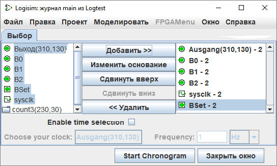

Вкладка Выбор
Вкладка Выбор позволяет вам выбрать, какие значения должны быть включены в журнал. Окно ниже соответствует следующей схеме.


Вкладка разделена на три вертикальных области. Первая (крайняя слева) представляет собой список всех компонентов схемы, значения которых могут быть записаны в журнал. Среди встроенных библиотек следующие типы компонентов поддерживают запись в журнал.
Библиотека Проводка: компоненты Контакт, Датчик и Тактовый генераторДля компонентов, имеющих метки, связанные с ними, имена соответствуют меткам; имена других компонентов определяют их тип и расположение в схеме. Все подсхемы также появятся в списке; их нельзя выбрать для записи, но подходящие компоненты внутри них - можно. Обратите внимание, что компонент ОЗУ требует выбрать, какие адреса памяти должны записываться в журнал; он поддерживает запись только первых 256 адресов.
Библиотека Ввод/вывод: компоненты Кнопка и Светодиод
Библиотека Память: все компоненты за исключением ПЗУ
Последняя (крайняя правая) вертикальная область содержит список тех компонентов, которые были выбраны. Кроме того, в ней указывается основание, по которому многобитные значения компонента будут записываться; основание не влияет на однобитные значения.
Средний столбец кнопок позволяет манипулировать элементами внутри выборки.
- Добавить добавляет в выборку выделенный в левой области элемент (или несколько).
- Изменить основание переключает основание для компонента, выделенного в данный момент в выборке между 2 (двоичным), 10 (десятичным), и 16 (шестнадцатеричным).
- Сдвинуть вверх перемещает компонент, выделенный в данный момент в выборке, вверх на одну позицию.
- Сдвинуть вниз перемещает компонент, выделенный в данный момент в выборке, вниз на одну позицию.
- Удалить удаляет компонент, выделенный в данный момент в выборке.
Далее: Вкладка Таблица.